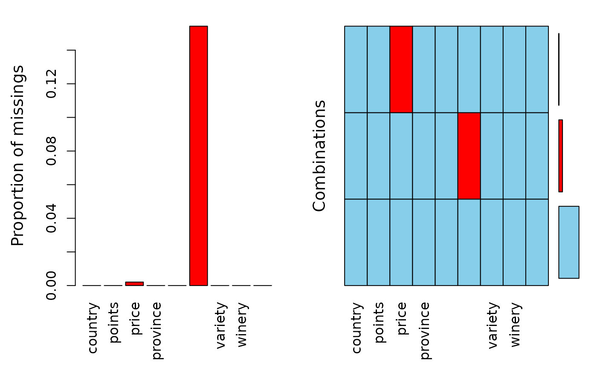

Wine reviews from France, Switzerland, Austria and Germany.
A data frame with 9627 observations on the following 9 variables.
country of origin
the number of points WineEnthusiast rated the wine on a scale of 1-100 (though they say they only post reviews for wines that score >=80)
the cost for a bottle of the wine
the province or state that the wine is from
name of the person who tasted and reviewed the wine
Twitter handle for the person who tasted ane reviewed the wine
the type of grapes used to make the wine (ie pinot noir)
the winery that made the wine
broader category as variety
https://www.kaggle.com/zynicide/wine-reviews
The data was scraped from WineEnthusiast during the week of Nov 22th, 2017. The code for the scraper can be found at https://github.com/zackthoutt/wine-deep-learning This data set is slightly modified, i.e. only four countries are selected and broader categories on the variety have been added.
#> tibble [9,627 × 9] (S3: spec_tbl_df/tbl_df/tbl/data.frame) #> $ country : Factor w/ 3 levels "Austria","France",..: 3 2 2 3 3 3 3 3 3 2 ... #> $ points : num [1:9627] 87 86 86 86 86 91 91 91 91 88 ... #> $ price : num [1:9627] 24 24 15 9 10 16 14 30 22 27 ... #> $ province : chr [1:9627] "Mosel" "Burgundy" "Burgundy" "Rheinhessen" ... #> $ taster_name : Factor w/ 5 levels "Anna Lee C. Iijima",..: 1 5 5 1 1 1 1 1 1 5 ... #> $ taster_twitter_handle: chr [1:9627] NA "@vossroger" "@vossroger" NA ... #> $ variety : Factor w/ 29 levels "Cabernet Franc-Cabernet Sauvignon",..: 19 5 5 19 19 19 19 19 19 5 ... #> $ winery : chr [1:9627] "Richard Böcking" "Simonnet-Febvre" "Vignerons des Terres Secrètes" "Schmitt Söhne" ... #> $ variety_main : Factor w/ 5 levels "Chardonnay","Pinot Noir",..: 3 1 1 3 3 3 3 3 3 1 ...aggr(wine)